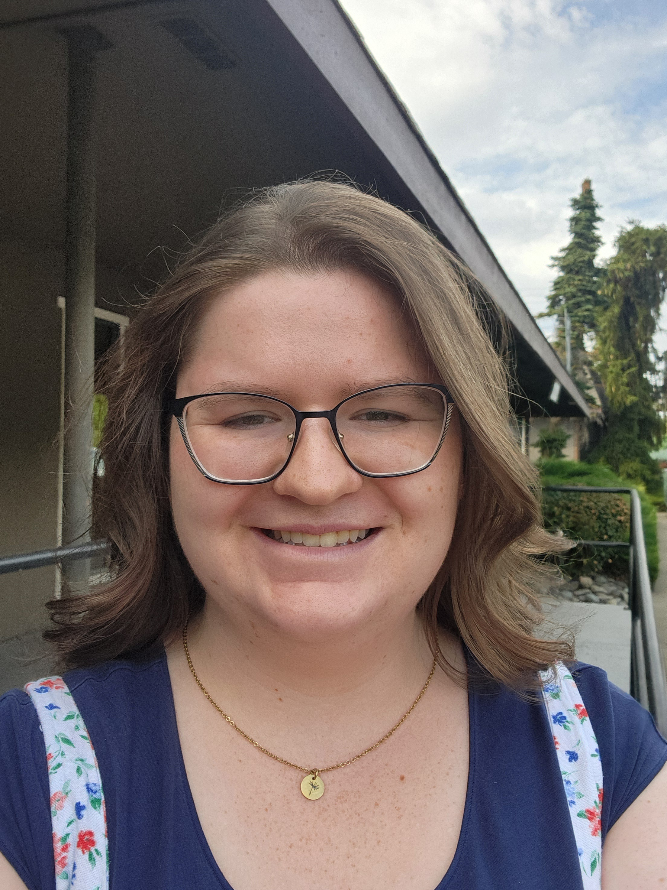

Angelina Orwin
I love to read, bake, paint, sometimes hike, and listen to music. This is my first semesterhere at BYUI. I am majoring in computer science and am the second oldest of four children. I have an older sister and two younger brothers. Two of my favorite scriptures are D&C 6:36 and 2 Timothy 1:7.